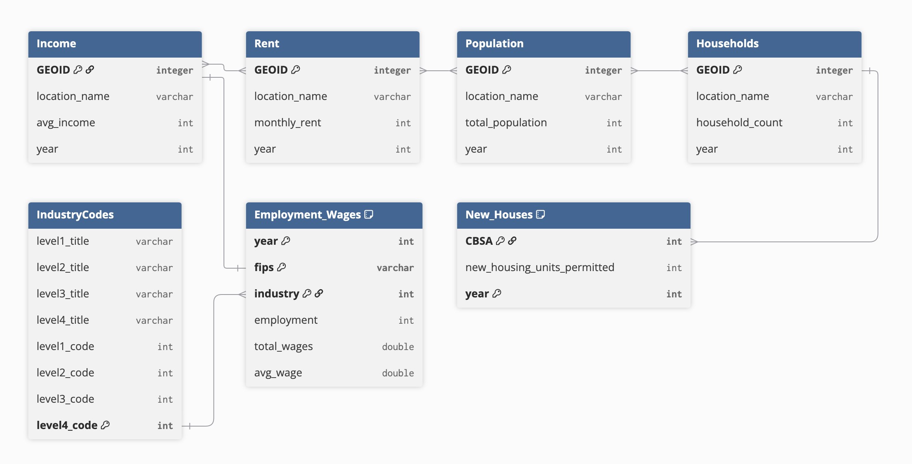
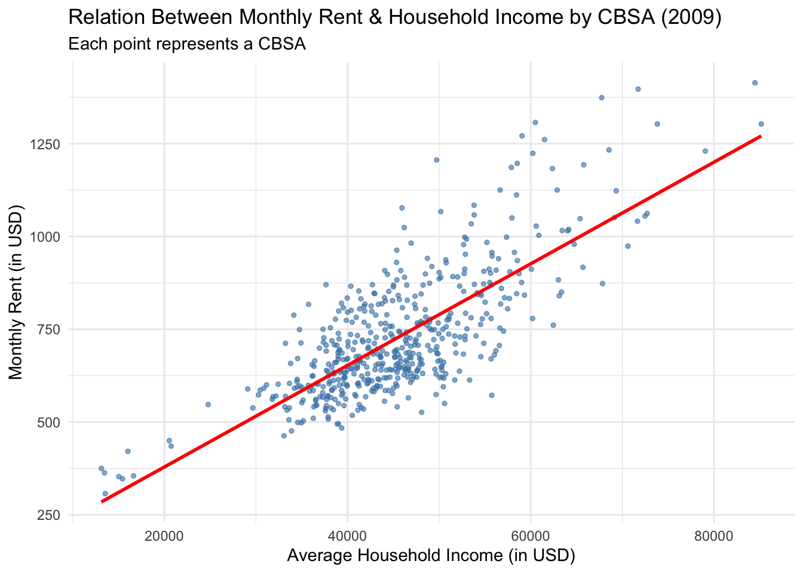
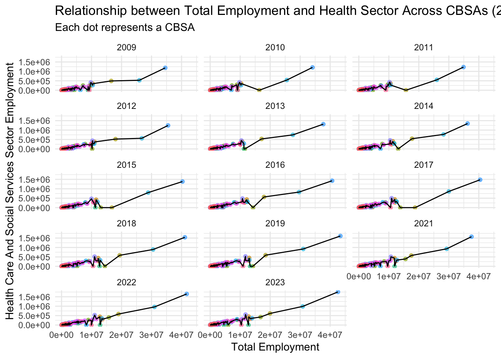
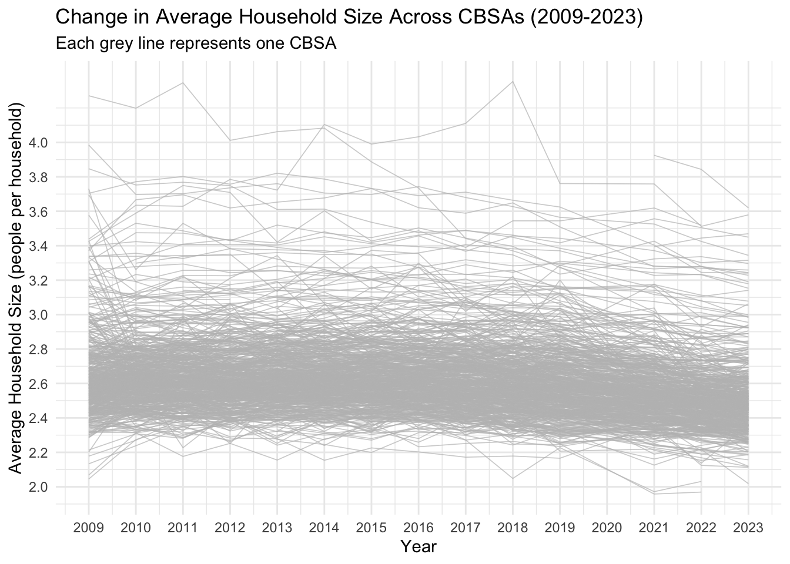
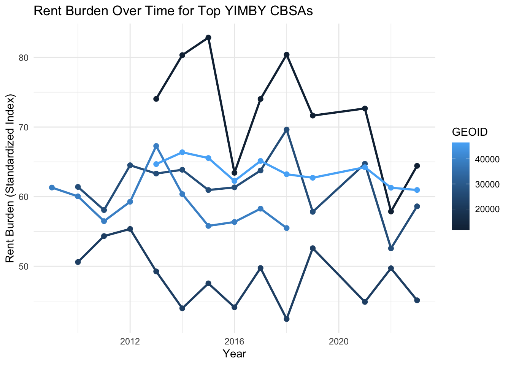
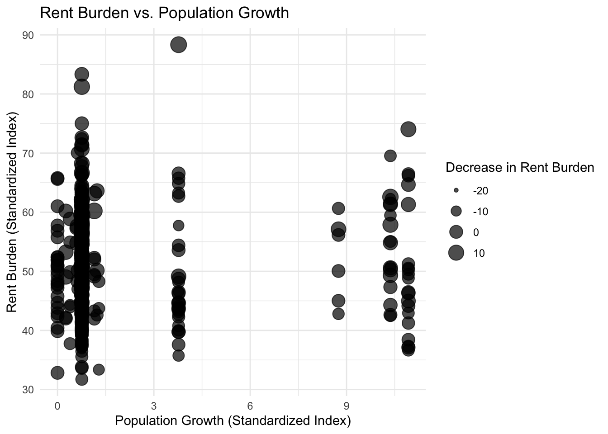

Affordability for housing in the U.S., such as NYC, has been a growing concern for civilians over the past few years, as of the time of making this project. The project will collect analysis on whether real-estate development should occur in a particular area. There may be bias towards being a YIMBY as a short policy brief is written at the end to encourage congressional representatives who would benefit from YIMBY-type policies. A section called “Index” provides meaning of these acronyms and terms used throughout the project. There is a main focus on looking at CBSAs as they provide the most relevant data for analysis.
Index
Definitions
CBSAs: “Core-Based Statistical Areas”. A metropolitan area surrounding a central town.
YIMBY: “Yes In My Back Yard”. Support for real-estate development around a resident’s area.
NIMBY: “Not In My Back Yard”. Against real-estate development around a resident’s area.
ACS: “American Community Survey”. Collection of data from the US Census Bureau since 2005 where people were surveyed opinions about households for a particular region.
NAICS: “North American Industry Classification System”. Sets a code to a specific industry.
FIPS: “Federal Information Processing Standards”. Standardized numeric identifiers used by the U.S. government to uniquely identify geographic areas, ranging from states down to census blocks.
GEOID: Index standard meant to uniquely identify an area within the U.S. by a number.
Rent Burden: How much of income a typical resident spends on housing.
Obtaining the Data
First, data is acquired from the US Census Bureau, more specifically, the ACS.
Show the code
#US Census Bureau (ACS) data download#| output: falseif(!dir.exists(file.path("data", "mp02"))){dir.create(file.path("data", "mp02"), showWarnings=FALSE, recursive=TRUE)}library <-function(pkg){## Mask base::library() to automatically install packages if needed## Masking is important here so downlit picks up packages and links## to documentation pkg <-as.character(substitute(pkg))options(repos =c(CRAN ="https://cloud.r-project.org"))if(!require(pkg, character.only=TRUE, quietly=TRUE)) install.packages(pkg)stopifnot(require(pkg, character.only=TRUE, quietly=TRUE))}library(tidyverse)library(glue)library(readxl)library(tidycensus)get_acs_all_years <-function(variable, geography="cbsa",start_year=2009, end_year=2023){ fname <-glue("{variable}_{geography}_{start_year}_{end_year}.csv") fname <-file.path("data", "mp02", fname)if(!file.exists(fname)){ YEARS <-seq(start_year, end_year) YEARS <- YEARS[YEARS !=2020] # Drop 2020 - No survey (covid) ALL_DATA <-map(YEARS, function(yy){ tidycensus::get_acs(geography, variable, year=yy, survey="acs1") |>mutate(year=yy) |>select(-moe, -variable) |>rename(!!variable := estimate) }) |>bind_rows()write_csv(ALL_DATA, fname) }read_csv(fname, show_col_types=FALSE)}# Household income (12 month)INCOME <-get_acs_all_years("B19013_001") |>rename(household_income = B19013_001)# Monthly rentRENT <-get_acs_all_years("B25064_001") |>rename(monthly_rent = B25064_001)# Total populationPOPULATION <-get_acs_all_years("B01003_001") |>rename(population = B01003_001)# Total number of householdsHOUSEHOLDS <-get_acs_all_years("B11001_001") |>rename(households = B11001_001)
There also must be the number of new housing units for each year to be known. The data is downloaded and adjusted to be used for later steps.
Given this project focuses on at the level of Core-Based Statistical Areas or CBSAs, additional data such as career type is useful to have. This will be obtained from the Bureau of Labor Statistics (BLS), who records data using the the NAICS coding system. Due to the BLS NAICS coding system format, data from the NAICS schema must be reformatted before it is used for analysis.
Show the code
#BLS (NAICS)#| output: falselibrary(httr2)library(rvest)library(dplyr)library(httr2)library(rvest)get_bls_industry_codes <-function(){ fname <-file.path("data", "mp02", "bls_industry_codes.csv")library(dplyr)library(tidyr)library(readr)if(!file.exists(fname)){ resp <-request("https://www.bls.gov") |>req_url_path("cew", "classifications", "industry", "industry-titles.htm") |>req_headers(`User-Agent`="Mozilla/5.0 (Macintosh; Intel Mac OS X 10.15; rv:143.0) Gecko/20100101 Firefox/143.0") |>req_error(is_error = \(resp) FALSE) |>req_perform()resp_check_status(resp) naics_table <-resp_body_html(resp) |>html_element("#naics_titles") |>html_table() |>mutate(title =str_trim(str_remove(str_remove(`Industry Title`, Code), "NAICS"))) |>select(-`Industry Title`) |>mutate(depth =if_else(nchar(Code) <=5, nchar(Code) -1, NA)) |>filter(!is.na(depth))# These were looked up manually on bls.gov after finding # they were presented as ranges. Since there are only three# it was easier to manually handle than to special-case everything else naics_missing <- tibble::tribble(~Code, ~title, ~depth, "31", "Manufacturing", 1,"32", "Manufacturing", 1,"33", "Manufacturing", 1,"44", "Retail", 1, "45", "Retail", 1,"48", "Transportation and Warehousing", 1, "49", "Transportation and Warehousing", 1 ) naics_table <-bind_rows(naics_table, naics_missing) naics_table <- naics_table |>filter(depth ==4) |>rename(level4_title=title) |>mutate(level1_code =str_sub(Code, end=2), level2_code =str_sub(Code, end=3), level3_code =str_sub(Code, end=4)) |>left_join(naics_table, join_by(level1_code == Code)) |>rename(level1_title=title) |>left_join(naics_table, join_by(level2_code == Code)) |>rename(level2_title=title) |>left_join(naics_table, join_by(level3_code == Code)) |>rename(level3_title=title) |>select(-starts_with("depth")) |>rename(level4_code = Code) |>select(level1_title, level2_title, level3_title, level4_title, level1_code, level2_code, level3_code, level4_code) |>drop_na() |>mutate(across(contains("code"), as.integer))write_csv(naics_table, fname) }read_csv(fname, show_col_types=FALSE)}INDUSTRY_CODES <-get_bls_industry_codes()
Lastly, extract the BLS Quarterly Census of Employment and Wages, containing more useful factors that will go into the analysis.
Show the code
#BLS Quarterly Census of Employment and Wages data download#| output: falselibrary(httr2)library(rvest)get_bls_qcew_annual_averages <-function(start_year=2009, end_year=2023){ fname <-glue("bls_qcew_{start_year}_{end_year}.csv.gz") fname <-file.path("data", "mp02", fname) YEARS <-seq(start_year, end_year) YEARS <- YEARS[YEARS !=2020] # Drop Covid year to match ACSif(!file.exists(fname)){ ALL_DATA <-map(YEARS, .progress=TRUE, possibly(function(yy){ fname_inner <-file.path("data", "mp02", glue("{yy}_qcew_annual_singlefile.zip"))if(!file.exists(fname_inner)){request("https://www.bls.gov") |>req_url_path("cew", "data", "files", yy, "csv",glue("{yy}_annual_singlefile.zip")) |>req_headers(`User-Agent`="Mozilla/5.0 (Macintosh; Intel Mac OS X 10.15; rv:143.0) Gecko/20100101 Firefox/143.0") |>req_retry(max_tries=5) |>req_perform(fname_inner) }if(file.info(fname_inner)$size <755e5){warning(sQuote(fname_inner), "appears corrupted. Please delete and retry this step.") }read_csv(fname_inner, show_col_types=FALSE) |>mutate(YEAR = yy) |>select(area_fips, industry_code, annual_avg_emplvl, total_annual_wages, YEAR) |>filter(nchar(industry_code) <=5, str_starts(area_fips, "C")) |>filter(str_detect(industry_code, "-", negate=TRUE)) |>mutate(FIPS = area_fips, INDUSTRY =as.integer(industry_code), EMPLOYMENT =as.integer(annual_avg_emplvl), TOTAL_WAGES = total_annual_wages) |>select(-area_fips, -industry_code, -annual_avg_emplvl, -total_annual_wages) |># 10 is a special value: "all industries" , so omitfilter(INDUSTRY !=10) |>mutate(AVG_WAGE = TOTAL_WAGES / EMPLOYMENT) })) |>bind_rows()write_csv(ALL_DATA, fname) } ALL_DATA <-read_csv(fname, show_col_types=FALSE) ALL_DATA_YEARS <-unique(ALL_DATA$YEAR) YEARS_DIFF <-setdiff(YEARS, ALL_DATA_YEARS)if(length(YEARS_DIFF) >0){stop("Download failed for the following years: ", YEARS_DIFF, ". Please delete intermediate files and try again.") } ALL_DATA}WAGES <-get_bls_qcew_annual_averages()
Data acquisition is complete but is not in one single file. Instead, it is set up into multiple files where the datasets can be connected to each other using join structures as shown below:

Notice!
The ER diagram is not fully normalized, resulting in cross-table relationships, odd use of composite keys, and some relationships may not be easy to follow at first.
Join Structure Considerations
With an Entity Relationship Model made from the given data, it is easier to visualize how each entity, representing a table, best joins with another table. The following join statements can be made:
Industry Codes can use level4_code to see in Employment_Wages what industry or industries are associated with the level4_code.
GEOIDcross-table relationship: The tables Income, Rent, Population, and Households all contain the same primary key GEOID. These tables can be connected through a many-to-many relationship given they all use the same column name with the same purpose of uniquely identifying values. The same scenario existst for location_name and year, but to a lesser extent
Employment_Wages can use fips to connect to the GEOID cross-table relationships. The Income table seemed most suitable to create the one-to-one relationship given both table names relate to how much income people make.
New_Houses, like the Employment_Wages table, has a composite key CBSA and year that can connect to the GEOID cross-table relationship. It seemed most appropriate to make the relationship with Households given both tables are in the context of housing.
Data Integration and Initial Exploration
How to Start on a Dataset
Before analysis can take place, it is best to explore the dataset and try to see what the data is in more detail and any interesting findings in the process.
Highlight 1: Largest CBSA
First, we will look at which CBSA, by name, permitted the largest number of new housing units in the decade from 2010 to 2019, inclusive.
Show the code
###Q2-1library(DT)#Filter CBSA data for 2010-2019 and create a temp tablecbsa_2010s <- PERMITS |>filter(year >=2010& year <=2019) |>group_by(CBSA) |>summarise(total_cbsa =sum(new_housing_units_permitted, na.rm =TRUE), .groups ="drop") |>arrange(desc(total_cbsa)) |>filter(total_cbsa >0)#Get CBSA names from households tablecbsa_names <- HOUSEHOLDS |>filter(year >=2010& year <=2019) |>select(GEOID, NAME, year) |>distinct(GEOID, .keep_all =TRUE) |>mutate(CBSA =as.numeric(GEOID)) |>filter(!is.na(CBSA))#Joining CBSA with their respective Namestop_cbsa_named <- cbsa_2010s |>left_join(cbsa_names, by="CBSA") |>filter(!is.na(NAME)) |>select(NAME, CBSA, total_cbsa, year) |>arrange(desc(total_cbsa)) |>head(30)#Redeclare variable to output datatabletop_cbsa_named |>rename("Total CBSA"= total_cbsa, "Name"= NAME, "Year"= year) |>datatable(style ="bootstrap5")
Noteworthy Findings
The CBSA that had the most permits for new housing units between 2010 and 2019 was Houston-Sugar Land-Baytown, TX Metro Area with 482075 permits.
What’s interesting is just how large of a lead this CBSA had, alongside Dallas-Fort and NY being very close, as the 4th largest, Atlanta-Sandy Springs-Marietta, had just nearly half the permits in the same year of 2010. This trend of dramatic drops in total permits continues with groups of metro areas in different locations, likely attributed to different macroeconomic factors for each.
Highlight 2: Exploring Albuquerque, NM
Given the CBSA of Albuquerque is 10740 as provided by instructions, no joins are necessary since data was formatted where CBSA equals GEOID. Therefore, the New_Houses table, denoted PERMITS, can be used alone to find what year Albuquerque had the most permits.
Show the code
###Q2-2#Arrange permits in descending order to find the largest valuealbuquerque_permits <- PERMITS |>filter(CBSA ==10740) |>arrange(desc(new_housing_units_permitted)) |>head(30) |>#Notice only 15 rows appear as there are only 15 years in the data#No need for CBSA row as all are the same value.select(-CBSA)#Create a format_titles variable to make the table columns look nicer. Used in later chunks#Credit: Professor Michael Weylandtlibrary(stringr)format_titles <-function(df){colnames(df) <-str_replace_all(colnames(df), "_", " ") |>str_to_title() df}#Create datatablealbuquerque_permits |>format_titles() |>datatable(style ="bootstrap5")
Noteworthy Findings
Albuquerque, NM (CBSA Number 10740) permit the most houses in 2021 with 4021 permits.
When looking at other years, none even reach 3000 permits. This is likely due to the COVID-19 pandemic where people spent almost all their time indoors, encouraging more houses to be built. The housing market for Albuquerque remains strong due to the pandemic as it had about 2100 permits in 2019 to over 2800 permits in 2022 and 2023. Had it not been for the pandemic, it is likely that Albuquerque would have remained in the 2100 to 2200 range in permit count. Of course, other unpredictable factors could have skyrocketed permits without harming humans yet that remains to be analyzed.
Highlight 3: State With Highest Average Individual Income
Given there are many ways to approach this task, this portion will only look at the year 2015. Also, remember that CBSA does not represent a state (refer to the Index) as there could be multiple CBSAs within a state.
Show the code
###Q2-3#Template dataframe to left join with the final answer, making it more legible.state_df <-data.frame(abb =c(state.abb, "DC", "PR"),name =c(state.name, "District of Columbia", "Puerto Rico"))#Join all necessary tables into one variableincome_houses_population_2015 <- INCOME |>filter(year ==2015) |>left_join(HOUSEHOLDS, by=c("GEOID", "NAME", "year")) |>left_join(POPULATION, by=c("GEOID", "NAME", "year"))#Find total income per statestate_total_income_2015 <- income_houses_population_2015 |>mutate(cbda_income = household_income * households) |>#Create state column to easily find a state.mutate(state =str_extract(NAME, ", (.{2})", group=1)) |>group_by(state) |>summarise(total_state_income =sum(cbda_income),total_state_population =sum(population)) |>mutate(avg_individual_income = total_state_income / total_state_population) |>#Joining the state dataframeleft_join(state_df, by =c("state"="abb")) |>arrange(desc(avg_individual_income))#All states will be presented#Datatablestate_total_income_2015 |>rename("Average Individual Income"="avg_individual_income") |>format_titles() |>datatable(style ="bootstrap5") |>formatCurrency("Average Individual Income",currency ="", interval =3, mark =",") |>formatRound(c("Total State Income", "Total State Population"), mark =",")
Key Findings
The state with the highest average individual income in 2015 was the District of Columbia, averaging 33,232.88 USD.
When comparing the District of Columbia (DC) to other states, there are a few factors that are important to highlight. DC is a top 20 contender for being the most populated state yet made the 8th most total state income. Having such context provides additional rationale why DC was the highest in average individual income.
The interactive table can be used to answer many other questions besides the Key Findings. Try to explore the table and see if you can find other key findings!
Highlight 4: Finding the Most Data Scientists
Given that Data Scientists and Business Analysts are recorded under NAICS code 5182, the INDUSTRY_CODES table is useful for verifying this as a level3_code, given the number of digits. The WAGES table also has use as it directly has the proper NAICS code in the INDUSTRY column alongside the FIPS column. Given the adjustments made to the dataset, “C” can be removed from FIPS values and have a 0 added to the end of that value to create a GEOID.
Show the code
#Q2-4#Create dataframe that links BLS and NAICS codesbls_naics_ds <- WAGES |>filter(INDUSTRY ==5182) |>mutate("GEOID"=as.double(paste0(str_remove(FIPS, "C"), "0"))) |>inner_join(INCOME, WAGES, by =join_by(GEOID =="GEOID")) |>#Remove unnecessary & duplicate columnsselect(-INDUSTRY, -year, -household_income)#Find the most data scientists in an area for each yeartop_ds_year <- bls_naics_ds |>group_by(YEAR) |>slice_max(EMPLOYMENT, n =1, with_ties =FALSE) |>ungroup() |>select(NAME, YEAR, EMPLOYMENT, AVG_WAGE, -TOTAL_WAGES)#Create datatable to find when NY last had the most data scientiststop_ds_year |>rename("Average Wage"= AVG_WAGE) |>format_titles() |>datatable(style ="bootstrap5") |>formatCurrency("Average Wage",currency ="", interval =3, mark =",")
Key Findings
The last year NYC CBSA had the most data scientists in the country was in 2015 with almost 19,000 employees. Since then, the San Francisco CBSA had the most data scientists with over 30,000 employed as of 2023. At the same time, the Average Wage has been increasing for data scientists year over year with an average of almost 310,000 USD as of 2023. This indicates data scientists may be in strong demand, though the market shifting for AI could invalidate this statement for the future.
Highlight 5: NYC CBSA Exploration
Since we are provided with info that finance industries is NAICS code 52, we can look only at the NYC CBSA area which has a FIPS of C3562. This was found by reverse engineering the GEOID where the 0 is removed and a C is added in front of the number (see code below on how this was done).
Show the code
###Q2-5#Find CBSA of NYC CBSA areanyc_geoid <- INCOME |>filter(NAME =="New York-Northern New Jersey-Long Island, NY-NJ-PA Metro Area") |>distinct(GEOID) |>mutate(FIPS =paste("C", str_remove(GEOID, "0"), sep ="")) |>select(GEOID, FIPS)#Find total wage in NYC CBSAnyc_total_wage <- WAGES |>filter(FIPS == nyc_geoid$FIPS) |>group_by(YEAR) |>summarise(total_wage =sum(TOTAL_WAGES))#Find total wage in financial field in NYC CBSAnyc_total_financial_wage <- WAGES |>filter(FIPS == nyc_geoid$FIPS & INDUSTRY ==52) |>group_by(YEAR) |>summarize(financial_total_wage =sum(TOTAL_WAGES))#Find the fraction of total wages in the NYC CBSA was earned by people employed in the finance and insurance industriesnyc_fraction_financial <- nyc_total_wage |>left_join(nyc_total_financial_wage, by="YEAR") |>mutate(finance_fraction =round(financial_total_wage / total_wage, digits =5),finance_percent = finance_fraction *100) |>arrange(desc(finance_fraction))#Create datatablenyc_fraction_financial |>rename("Total Wages"= total_wage) |>format_titles() |>datatable(style ="bootstrap5") |>formatCurrency(c("Total Wages", "Financial Total Wage"),currency ="", interval =3, mark =",")
Key Findings
In the NYC CBSA, people employed in the finance and insurance industries accounted for about 4.6%, peaking in 2014. This may be due to a stable economy during that year which brought interest for many people to work in that field. Also, having a total wage of nearly 120 billion during this peak shows this industry is capable of contributing well to the economy. Additionally, the financial total wage has always been increasing year over year, further showing its strength into the economy.
Initial Visualizations
This section looks into visualizations we can create with minimal analysis required. The sub headers will guide what is being done in its section.
Visualization 1: Rent, Income per CBSA in 2009
The below graph shows the relationship between monthly rent and average household income per CBSA in 2009.
Show the code
library(ggplot2)###Q3-1#Find income for 2009, deleting NAsrent_income_2009 <- INCOME |>filter(year ==2009) |>inner_join(RENT, by =c("year", "GEOID", "NAME")) |>filter(!is.na(monthly_rent), !is.na(household_income))#Create plotggplot(rent_income_2009, aes(x=household_income, y = monthly_rent)) +geom_point(color ="steelblue",size =1, alpha =0.6) +geom_smooth(method ="lm", se =FALSE, color ="red") +scale_color_brewer(palette ="Set2") +labs(title ="Relation Between Monthly Rent & Household Income by CBSA (2009)",subtitle ="Each point represents a CBSA",x ="Average Household Income (in USD)",y ="Monthly Rent (in USD)" ) +theme_minimal()

Key Findings
The data reveals that there is a positive relationship between Average Household Income and Monthly Rent in the year 2009. It is also evident that a majority of CBSAs have an average household income of about 40,000 USD to 50,000 USD.
Visualization 2: Relationship Between Total Employment and Total Employment in the Health Care and Social Services Sector.
Show the code
###Q3-2#Find total employment by yeartotal_employment_by_year <- WAGES |>group_by(YEAR, FIPS) |>summarize(total_employment =sum(EMPLOYMENT))#Find total health and social workerstotal_hs_workers <- WAGES |>filter(INDUSTRY ==62) |>group_by(YEAR,FIPS) |>summarize(total_employment_health_social =sum(EMPLOYMENT)) |>inner_join(total_employment_by_year, by =c("YEAR", "FIPS"))#Plot findings with each distinct plot per yearggplot(total_hs_workers, aes(x = total_employment, y = total_employment_health_social)) +geom_point(aes(color = FIPS), alpha =0.6, show.legend =FALSE) +geom_line() +facet_wrap(~ YEAR, ncol =3) +scale_y_continuous(labels = scales::scientific) +labs(x ="Total Employment",y ="Health Care And Social Services Sector Employment",title ="Relationship between Total Employment and Health Sector Across CBSAs (2009-2023)",subtitle ="Each dot represents a CBSA") +theme_minimal()

Key Findings
The relationship between total employment and employment in the heath care and social services sector across different CBSAs has a strong relationship starting in the year 2012, growing stronger after each year onward. Excluding the third largest CBSA which occasionally drops off, an upwards trend is seen between having more total employment leading to more health care and social services sector employment. This could be due to a 1:1 ratio between the employments or larger CBSAs requiring more health assistance.
Visualization 3: Evolution of Household Size Over Time
The average household size over time is represented by how many people live in a house. A plot representing the average of all CBSAs are shown below:
Show the code
#Q3-3#Calculate average Household sizeavg_house_size <- INCOME |>left_join(HOUSEHOLDS, by =c("GEOID", "NAME", "year")) |>left_join(POPULATION, by =c("GEOID", "NAME", "year")) |>mutate(avg_household_size = population / households) |>select(avg_household_size, year, GEOID)#Creating the line plot including all CBSAsggplot(avg_house_size, aes(x = year, y = avg_household_size, group = GEOID)) +geom_line(alpha =0.7, color ="gray", linewidth =0.3) +scale_x_continuous(breaks =seq(2009, 2023, by =1)) +scale_y_continuous(breaks =seq(2, 4, by =0.2)) +labs(title ="Change in Average Household Size Across CBSAs (2009-2023)",subtitle ="Each grey line represents one CBSA",x ="Year",y ="Average Household Size (people per household)", ) +theme_minimal()

Key Finding
It is evident that the average household size across CBSAs is 2 to 3 people per household, assuming we consider a person to be a whole unit. This trend has stayed consistent from 2009 to 2023, yet there is a slight down curve going towards 2 people per household. Also notice some CBSAs have missing data for this time range, likely due to NA values in the dataset.
Analysis on Rent Burden
To analyze rent burden, first we need an initial metric of rent affordability. This will done through standardization where an index is made to determine rent burden. An approach of using the year 2009 will be used.
Show the code
#Join Income & Rent and calculate initial ratioincome_rent <- INCOME |>inner_join(RENT, by =c("GEOID", "year", "NAME")) |>mutate(annual_rent = monthly_rent *12,rent_burden_raw = annual_rent / household_income) |>filter(rent_burden_raw >0)#Calculating baseline: first year is 2009.baseline_ri <- income_rent |>filter(year ==2009) |>summarize(baseline =mean(rent_burden_raw))
The baseline rent burden, using the 2009 average in the U.S. is 19.4%.
Having the baseline defined, the next step is standardization of rent burden. This is achieved by using the baseline as the middle value and creating index based values.
Show the code
# Standardize the rent burdenrent_burden_std <- income_rent |>mutate(# Method: Ratio to baseline scaled at 0-100burden_ratio = rent_burden_raw /as.double(baseline_ri),# Transform to 0-100 scale where 50 is the baselinerent_burden_index =50* burden_ratio )|># Cap at reasonable maximum for displaymutate(rent_burden_index =pmin(rent_burden_index, 150));#Find the index rangerent_burden_range <-c(round(min(rent_burden_std$rent_burden_index)), round(max(rent_burden_std$rent_burden_index)))
The range of the rent burden index is 32 to 98. This means that in year 2009, an index value of 50 is the national average. Having an index value of 100 is twice the average.
The next section provides a table for the CBSA of Orlando, Florida and how it changed over time and another table highlighting the highest and lowest rent burden CBSAs.
Table 1: Rent Burden of Orlando
Show the code
#Finding GEOID of Orlandosf_info <- INCOME |>filter(str_detect(NAME, "Orlando.*FL"))#Create interactive datatable with necessary componentsrent_burden_std |>filter(NAME =="Orlando-Kissimmee-Sanford, FL Metro Area") |>mutate(rent_burden_percent =round(rent_burden_raw *100, digits =4),rent_burden_index =round(rent_burden_index, digits =4)) |>arrange(year) |>select(year, rent_burden_percent, rent_burden_index) |>format_titles() |>datatable(style ="bootstrap5")
Analysis
Using the interactive datatable, the rent burden of Orlando-Kissimmee-Sanford, FL Metro Area can be analyzed.
Immediately, it is obvious that this Metropolitan Area has a higher average rent burden compared nationally as all years are above 50. Until the pandemic (2020), the rent burden stayed consistent in the range of 64 to 66. Afterwards, the rent burden has started increasing reaching an all time high of almost 72 in year 2023. This indicates that the cost of living dramatically increased above the national average. However, the Rent Burden Percent has not increased as much over the years, an indicator that residents are not drastically affected and likely are more wealthy compared to other areas.
Table 2: Highest & Lowest Rent Burden
Using the standardized index table, it is simple to find which CBSAs are at the top and bottom. Given the dataset goes up to year 2023, we can treat it as the most recent value for a CBSA.
Show the code
#Filter the top 10 indexesrent_burden_std |>filter(year ==2023) |>arrange(desc(rent_burden_index)) |>slice_head(n =10) |>mutate(rent_burden_percent = rent_burden_raw *100) |>select(NAME, rent_burden_percent,rent_burden_index) |>arrange(desc(rent_burden_index)) |>as.data.frame() |>format_titles() |>datatable(caption ="Top 10 Rent Burden Metro Areas (2023)", style ="bootstrap5") |>formatRound(c("Rent Burden Percent", "Rent Burden Index"), digits =4)
Analysis
The highest rent burden index for 2023 is 80.3171 in Clearlake, CA Micro Area. This suggests houses were the most expensive to live by rent in 2023 were in this CBSA. A correlation between Rent Burden Percent and Rent Burden Index is also suggested where both columns move in the same direction as one increases or decreases.
The lowest rent burden index for 2023 is 32.8238 in Laconia, NH Micro Area. This suggests houses were the least expensive to live by rent in 2023 were in this CBSA. The same correlation can of Rent Burden Raw and Rent Burden Index exists like in the table above. Looking at both tables, the price of living, besides rent, could be a driving force for these results. Specifically, it may be possible in two different locations to have the same purchasing power for goods.
Housing Growth
This section looks into CBSAs that have a large quantity of housing units and CBSAs that have housing permits that grow faster than the population, as they are likely to be very affordable. A housing growth measuring system is created for this analysis.
Rearranging Data for Required Metrics
Show the code
#Join population and permits tablepop_permits <- POPULATION |>inner_join(PERMITS, by ="year") |>#Match CBSA codesfilter(CBSA == GEOID) |>arrange(CBSA, year)#Finding 5-year population grow in a raw formatpop_permits <- pop_permits |>group_by(GEOID, NAME) |>arrange(year) |>mutate(pop_5yr_back =lag(population, n =5),pop_growth_5yr = population - pop_5yr_back,pop_growth_pct = (pop_growth_5yr / pop_5yr_back) *100) |>ungroup() |>filter(year >=2014, !is.na(pop_growth_5yr)) #Begin in 2014, 5 years after 2009
Notice!
Standardization will be performed to grasp the results more easily and provide better analysis. In this case, it will calculate permits per 1,000 residents.
Instantaneous Measure of House Growth
This measure of housing growth depends on the absolute population of a CBSA and the number of new housing units permitted that year.
Show the code
#Finding permits per 1,000 residentspop_permits <- pop_permits |>mutate(permits_1000 = (new_housing_units_permitted / population) *1000)#Create baseline: National average permits per 1,000 in 2014baseline_permits_1000 <- pop_permits |>filter(year ==2014) |>summarise(baseline =mean(permits_1000)) |>pull(baseline)#Standardize the Index where 100 = 2014, our baselinepop_permits_std <- pop_permits |>mutate(inst_index = (permits_1000 / baseline_permits_1000) *100)
Interpreting the Index
100: Same house building rate as the 2014 national average
> 100: House building is faster than the baseline
< 100: House building is slower than the baseline
Measuring Instantaneous Growth on Top and Bottom
Having a baseline for instantaneous measure, we can now find CBSAs who built the fastest and slowest. The top/bottom 10 will be used respectively for further analysis.
Show the code
#Finding the top and bottom resultsinst_top_bottom <-bind_rows(slice_max(pop_permits_std, inst_index, n=10) |>mutate(group ="Top"),slice_min(pop_permits_std, inst_index, n=10) |>mutate(group ="Bottom")) |>mutate(rank =row_number()) |>arrange(desc(inst_index))#Use the found data and reorder it inst_data <- inst_top_bottom |>arrange(desc(inst_index)) |>select(NAME, year, population, new_housing_units_permitted, permits_1000, inst_index, group)#Create the datatableinst_data |>rename("Instantaneous Index"= inst_index, "Permits per 1000 People"= permits_1000) |>format_titles() |>as.data.frame() |>datatable(caption ="Instantaneuos Measurements of Top & Bottom CBMAs", style ="bootstrap5") |>formatRound(c("Permits Per 1000 People", "Instantaneous Index"), digits =2)
Analysis
Nearly all of the top performing CBMAs since 2014 occurred during the COVID-19 pandemic, highlighting this was a time period where building houses was enforced. All top performers are from the east coast of the country besides CBMAs in Utah, possibly favoring permits to be given in the eastern part of the country. The top performers also have populations not considered to be dense, but remember that these pandemic level numbers may skew our conclusion.
Bottom performers are all over the country and there is fewer instances that came during the pandemic. For instace, the Danville, IL Metro Area performed the worst in 2022, providing valuable information. All of these CBSAs have populations under 150,000 and nearly reach 0 in the Instantaneous Index.
Measuring Rate-Based Housing Growth
This approach compares the number of housing permits to the population growth over a 5 year lookback window. The same baseline of 2014 will be used, but adjusted for the rate-based approach.
Show the code
#Find permit growth ratiopop_permits_ri_std <- pop_permits |>#Used the instantaneous measure for declining populationsmutate(permit_growth_ratio_5yr =case_when( pop_growth_5yr <=0~ permits_1000,TRUE~ (new_housing_units_permitted / pop_growth_5yr) ))#Create baseline: National average permits per 1,000 in 2014baseline_permits_1000_rb <- pop_permits_ri_std |>filter(year ==2014, pop_growth_5yr >0) |>summarise(baseline =mean(permit_growth_ratio_5yr)) |>pull(baseline)#Standardize the Index where 100 = 2014, our baselinepop_permits_rb <- pop_permits_ri_std |>mutate(rate_based_index = (permit_growth_ratio_5yr / baseline_permits_1000_rb) *100)
Interpreting the Index
100: Same house building rate as the 2014 national average relative to population growth
> 100: House building is faster than population growth
< 100: House building is slower than population growth
Show the code
#Finding the top and bottom resultsrb_top_bottom <-bind_rows(slice_max(pop_permits_rb, rate_based_index, n=10) |>mutate(group ="Top"),slice_min(pop_permits_rb, rate_based_index, n=10) |>mutate(group ="Bottom")) |>mutate(rank =row_number()) |>arrange(desc(rate_based_index))#Use the found data and reorder it rb_data <- rb_top_bottom |>arrange(desc(rate_based_index)) |>select(NAME, year, population, new_housing_units_permitted, permits_1000, rate_based_index, group)#Create the datatablerb_data |>rename("Rate-Based Index"= rate_based_index, "Permits per 1000 People"= permits_1000) |>format_titles() |>as.data.frame() |>datatable(caption ="Rate-Based Measurements of Top & Bottom CBMAs", style ="bootstrap5") |>formatRound(c("Permits Per 1000 People", "Rate-Based Index"), digits =2)
Analysis
Many cities in the top are distinct, indicating this approach gave varying results compared to the instantaneous approach. In addition, the data seems like it could be standardized more as Mobile, AL Metro Area has the top rate-based index by a large margin, mainly due to its high population. Also, these indexes were mostly recorded before the pandemic, indicating reliable information. The top 10 also have about the same population, indicating there are other factors at play to make the index so large.
As for the bottom CBMAs, it is interesting to see that larger population numbers seem to decrease the rate-based index score and permits given. Factors like how dense these CBMAs are will have to be further analyzed to understand this correlation.
Composite Score of House Growth
This table takes the composite score of the last two indexes by computing their sum. Additional factors like construction speed and density of a CBSA might be addressed in these results.
Show the code
#Combine both metrics via sumcomposite_data <- pop_permits_std |>mutate(composite_score = (inst_index + rb_data$rate_based_index) /2)#Obtain the top and bottom CBSAsc_top_bottom <-bind_rows(slice_max(composite_data, composite_score, n=10) |>mutate(group ="Top"),slice_min(composite_data, composite_score, n=10) |>mutate(group ="Bottom")) |>mutate(rank =row_number()) |>arrange(desc(composite_score))composite_tb <- c_top_bottom |>arrange(desc(composite_score)) |>select(NAME, year, population, new_housing_units_permitted, permits_1000, composite_score, group)#Create the datatablecomposite_tb |>rename("Permits per 1000 People"= permits_1000) |>format_titles() |>as.data.frame() |>datatable(caption ="Rate-Based Measurements of Top & Bottom CBMAs", style ="bootstrap5") |>formatRound(c("Permits Per 1000 People", "Composite Score"), digits =2)
Analysis
The table indicates that there are oddities within the dataset that skews the results. Top performers are nearly identical with their index value while the bottom performers start spreading out too much.
To best analyze the composite score, further standardization is needed alongside additonal context of each CBSA.
Further Visualizations
Show the code
# Calculate metrics for each CBSAcbsa_metrics <- rent_burden_std |>group_by(GEOID) |>summarise(early_rent_burden =mean(rent_burden_index[year ==min(year)]),late_rent_burden =mean(rent_burden_index[year ==max(year)]),rent_burden_change = late_rent_burden - early_rent_burden,early_population = POPULATION$population[year ==min(year)] |>first(),late_population = POPULATION$population[year ==max(year)] |>first(),early_housing = HOUSEHOLDS$households[year ==min(year)] |>first(),late_housing = HOUSEHOLDS$households[year ==max(year)] |>first(),population_growth = (late_population - early_population) / early_population,housing_growth = (late_housing - early_housing) / early_housing ) |>ungroup()# Calculate average housing growth for all CBSAsavg_housing_growth_all <-mean(cbsa_metrics$housing_growth, na.rm =TRUE)# Identify YIMBY CBSAsyimby_cbsas <- cbsa_metrics |>filter( early_rent_burden >median(early_rent_burden, na.rm =TRUE), # High early rent burden rent_burden_change <0, # Decrease in rent burden population_growth >0, # Population growth housing_growth > avg_housing_growth_all # Above-average housing growth )# Filter data for top YIMBYstop_yimby_ids <- yimby_cbsas |>arrange(desc(housing_growth)) |>head(5) |>pull(GEOID)# Filter and aggregate datatop_yimby_data <- rent_burden_std |>filter(GEOID %in% top_yimby_ids) |>group_by(GEOID, year) |>summarise(rent_burden =mean(rent_burden_index), .groups ="drop")# Plotggplot(top_yimby_data, aes(x = year, y = rent_burden, color = GEOID, group = GEOID)) +geom_line(linewidth =1) +geom_point(size =2) +labs(title ="Rent Burden Over Time for Top YIMBY CBSAs",x ="Year", y ="Rent Burden (Standardized Index)", color ="GEOID") +theme_minimal()

Show the code
top_yimby_ids_df <-data.frame(GEOID = top_yimby_ids)top_yimby_names_df <- top_yimby_ids_df |>left_join(INCOME, by ="GEOID") |>distinct(NAME)print(top_yimby_names_df)
NAME
1 Arecibo, PR Metro Area
2 Prescott, AZ Metro Area
3 Urban Honolulu, HI Metro Area
4 Farmington, MO Micro Area
5 Huntsville, TX Micro Area
Analysis
The graph represents the CBSAs that are most likely to be a YIMBY city. The printout represents the lines of the graph, showcasing that Rent Burden can be rather volatile for YIMBY CBSAs. This raises questions on what macroeconmic factors are affecting the rent burden.
Show the code
# Visualization 2: Early Rent Burden vs. Population Growthrent_v_pop <-ggplot(cbsa_metrics, aes(x = population_growth, y = early_rent_burden, size =-rent_burden_change)) +geom_point(alpha =0.7) +labs(title ="Early Rent Burden vs. Population Growth",x ="Population Growth (in thousands)", y ="Rent Burden (Standardized Index)",size ="Decrease in Rent Burden") +theme_minimal()rent_v_pop

Analysis
The graph showcases all CBSAs and how they affect Population Growth and the Rent Burden. A majority of population growth is on the low end given the left cluster and most CBSAs are within a decrease in rent burden based on their radius. Clusters also exist in the 3 and 10 “groups” where early rent burden is not heavily impacted by population growth.